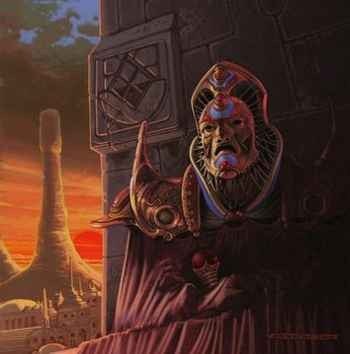

Genèse
Il y a de cela fort longtemps, les nombreuses querelles entre les dieux conduisirent à la multiplication des religions et des sectes, chaque fois plus fanatiques au fil du temps. Ceci généra sur terre un chaos spirituel un peu plus fort chaque jour, et dégénéra même rapidement par la suite en de multiples guerres de religions mettant à feu et à sang nombre de royaumes. Les dieux eux-même commencèrent à se sentir affaiblis et exagérément divisés. Un jour, ils décidèrent alors de se réunir tous en terrain neutre, aux confins du jour et de la nuit, du bien et du mal, afin de mettre un terme à cette dérive destructrice. Après plusieurs jours de discutions, ils parvinrent enfin à régler leur différents.
Ainsi naquit Tanith-Lenath, la Cité des Anciens, qui fut édifiée à la demande des dieux dans une région à l'écart du monde, afin que sur terre également les Hommes aient un lieu où régler leurs différents de nature spirituelle. La cité devait être le symbole de la réconciliation et de la cohabitation, afin de montrer à tous que celles-ci étaient possibles, dans les cieux comme sur terre. Cette ville serait également le lieu d'élévation spirituelle des plus sincères fidèles. Malheureusement, au bout de quelques siècles, à force de côtoyer les dieux, les habitants de Tanith-Lenath en vinrent à convoiter leur puissance, et espérer grâce à elle asservir le reste du monde.
Les dieux ne purent tolérer ce sacrilège. Ils furent alors contraints de provoquer l'anéantissement de la Cité des Anciens en lançant sur elle une terrible malédiction, à laquelle les historiens ont depuis donné le nom de Châtiment. Au cours d'un effroyable cataclysme, Tanith-Lenath fut cassé en son milieu par un éclair titanesque qui frappa le temple des Anciens, et le site fut incliné fortement sur lui-même afin que la vie en ce lieu soit encore plus difficile qu'elle ne l'avait jamais été. Une fois le courroux divin apaisé, les rares survivants du Châtiment se lamentèrent pendant 777 jours consécutifs, persuadés qu'ils étaient de l'imminence de la fin des temps.
À la fin de cette période de mortification, il fut un homme pour oser relever la tête et comprendre que la catastrophe n'annonçait pas l'apocalypse, mais le temps du renouveau. Mandala, tel était son nom, implora alors les dieux afin qu'ils viennent en secours à leurs fidèles et les guident vers un avenir meilleur. Les dieux entendirent sa prière et lui donnèrent leurs instructions : là où se dressait Tanith-Lenath, il faudrait construire une ville nouvelle qui s'appellerait Laelith. Dans cette ville seraient édifiés quatre temples, symbolisant les quatre principes directeurs de toute foi. Et à la tête de ces temples, un homme serait nommé au titre de Roi-Dieu, incarnation mortelle des volontés divines.
Ainsi Mandala fut le premier Roi-Dieu. Depuis, de nombreux saints hommes lui ont succédé tout en sachant garder la confiance des dieux, pour le bonheur de tous.
Oracle
Ce que tous les livres d'histoires relatent est que Mandala, le premier souverain de Laelith, fut nommé par les dieux eux-mêmes afin de diriger Laelith. Et tous les écrits relatent également que bien qu'élu par les dieux, Mandala (et tous les souverains qui lui succédèrent) n'était qu'un homme, un mortel. Ce que quasiment personne ne sait par contre, c'est qu'au moment où les dieux choisirent Mandala comme premier Roi-Dieu, ils désignèrent également en secret une autre personne pour diriger Laelith.
L'un possèderait un certain pouvoir matériel mais temporel, et dirigerait aux yeux de tous la cité qui offrirait au monde et à l'humanité un espace commun où toutes les confessions pourraient s'exprimer et se côtoyer. Mais il n'aurait pas la possibilité de s'adresser directement à tous les dieux comme avaient pu le faire certains prêtres de Tanith-Lenath auparavant, ceci afin d'éviter que le côtoiement quotidien des puissances divines ne tente une nouvelle fois les Hommes à reproduire les erreurs du passé. L'autre vivrait reclu et n'aurait aucun pouvoir matériel, mais il serait immortel et la voix des dieux, car en contact direct avec eux. Pour remplir ce dernier rôle, les dieux ressuscitèrent le frère de Mandala décédé durant le Châtiment, Orphyr. Mandala serait donc le Roi-Dieu, et Orphyr l'Oracle.
On connait très peu de choses au sujet de l'Oracle. Personne ne sait s'il s'agit toujours d'Orphyr, ni même à quoi il ressemble de nos jours, s'il possède encore une forme physique ou s'il ne s'agit plus que d'un esprit. Il vivrait dans le palais royal, dans une des nombreuses salles abandonnées, et ne pourrait en sortir. Seul le Roi-Dieu communique avec lui. Les grands prêtres n'ont aucun contact avec l'Oracle, et peu ont même connu son existence.
La connexion
Lorsqu'un Roi-Dieu meurt, un autre doit être nommé à l'unanimité par les quatre grands prêtres. En règle générale il s'agit de l'un d'eux, mais il est arrivé plusieurs fois qu'aucun membre du conseil ne remporte tous les suffrages et donc qu'une personne autre qu'un des grands prêtres, faisant elle l'unanimité, soit désignée pour monter sur le trône.
Lors de la cérémonie d'investiture, le Roi-Dieu ne se coiffe pas d'une couronne, mais reçoit un masque. Tous les habitants de Laelith sont persuadés que ce masque mystérieux permet au Roi-Dieu de communiquer directement avec les dieux. En réalité il n'en est rien. Tout comme les grands prêtres, le nouveau Roi-Dieu peut continuer de communiquer avec son propre dieu, en prenant extrêmement garde de ne faire aucun prosélytisme, mais seul au monde l'Oracle possède le réel pouvoir de communiquer avec tous les dieux existants. Lors de la première nuit qui suit la monté sur le trône d'un Roi-Dieu, l'Oracle se charge de se présenter à ce dernier, celui-ci ne soupçonnant généralement même pas son existence avant cela. Le masque est un moyen de communication télépathique entre l'Oracle et le Roi-Dieu, et dès lors le souverain ne le quittera pratiquement plus afin de rester en contact quasi permanent avec l'Oracle. Celui-ci est en effet consulté par le Roi-Dieu chaque fois qu'une grande décision doit être prise.
Ainsi se perpétue la tradition dans le plus grand secret depuis des siècles, l'Oracle étant finalement la voix de tous les dieux ainsi que le garant de la continuité dans l'exécution de la volonté divine au fil des règnes.
Basé sur un écrit du scribe C.Belli